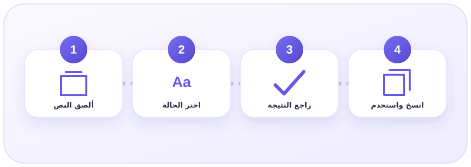
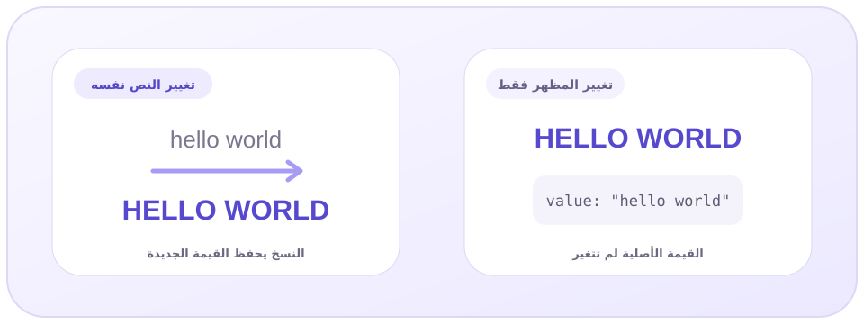
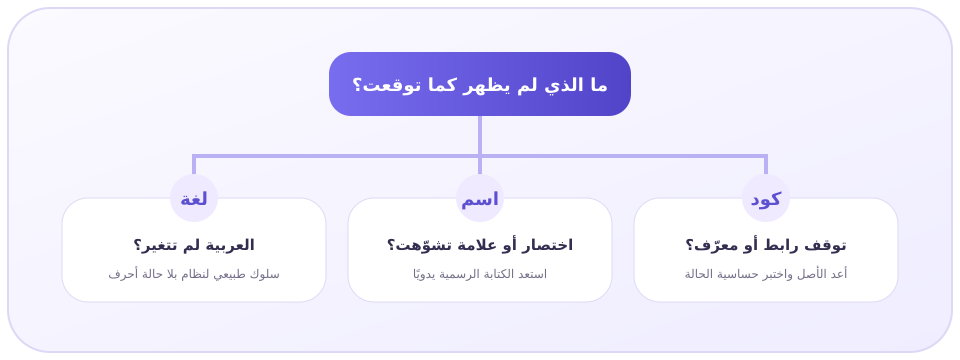

ما هو محول حالة الأحرف، وما الذي يغيّره فعلًا؟
محول حالة الأحرف أداة تعيد صياغة الشكل الطباعي للأحرف التي تدعم حالة كبيرة وصغيرة، مثل معظم حروف الإنجليزية. فهو يحوّل عبارة hello world إلى HELLO WORLD أو Hello World وفق الخيار المحدد، من دون أن يعيد كتابة الفكرة أو يصحح المعنى تلقائيًا.
تبدو المهمة بسيطة، لكنها مؤثرة في تجربة القراءة. العنوان المكتوب كله بحروف كبيرة قد يناسب ملصقًا قصيرًا، بينما يصبح مرهقًا في فقرة طويلة. والحروف الصغيرة قد تكون مثالية لأسماء الملفات والروابط، لكنها لا تلائم دائمًا بداية جملة أو اسمًا رسميًا. لذلك تبدأ نتيجة محول حالة الأحرف الاحترافية من سؤال صغير: أين سيظهر النص، ومن سيقرأه؟
تعتمد عملية التحويل الرقمية على تمثيل الحروف داخل معيار Unicode. أما ترميز UTF-8 فيساعد على حفظ النصوص متعددة اللغات، بما فيها العربية، بصورة متوافقة على الويب. في المقابل، يغطّي ASCII مجموعة أضيق ترتبط أساسًا بالأحرف الإنجليزية والرموز الشائعة.
العربية لا تملك Uppercase وLowercase، لذلك يبقى الجزء العربي كما هو. إذا كتبت «مشروع TOOLRAR الجديد»، فسيؤثر التحويل في TOOLRAR أو غيره من المقاطع اللاتينية فقط.
ومن المهم التفريق بين تغيير النص نفسه وبين تغيير مظهره. خاصية CSS المسماة text-transform قد تعرض الكلمة بحروف كبيرة بصريًا، لكن القيمة الأصلية التي تُنسخ أو تُخزّن قد تظل مختلفة. أما أداة التحويل فتهدف إلى إنتاج سلسلة نصية جديدة يمكنك نسخها واستخدامها في المستند أو النظام المطلوب.
أنواع حالات الأحرف واستخدام كل واحدة
ليس كل تحويل مناسبًا لكل سياق. قبل تشغيل محول حالة الأحرف، حدّد ما إذا كنت تتعامل مع عنوان تسويقي، جملة عادية، اسم متغير برمجي، أو رابط. الصيغة الصحيحة ترفع الاتساق، بينما الصيغة الخاطئة قد تجعل النص يبدو آليًا أو تكسر قيمة تقنية حساسة.
creative writingCREATIVE WRITINGCreative Writingالحروف الكبيرة والصغيرة
UPPERCASE يجعل الأحرف القابلة للتحويل كبيرة. يفيد في الاختصارات، والتنبيهات القصيرة، وبعض العناوين البصرية. لكنه ليس دعوة إلى كتابة مقالة كاملة بهذا الشكل؛ فالمقاطع الطويلة تصبح أبطأ في المسح البصري وقد تُفهم في المحادثات على أنها صراخ.
أما lowercase فيوحّد الحروف على الشكل الصغير. يناسب أسماء الملفات البسيطة وبعض حقول البيانات والروابط. وهو مفيد عند إعداد Slug واضح، مع الانتباه إلى أن الرابط يحتاج أيضًا إلى استبدال المسافات وفصل الكلمات وحذف الرموز غير الملائمة، لا إلى تصغير الأحرف وحده.
حالة العنوان وحالة الجملة
Title Case يرفع بداية كلمات متعددة. يصلح للعناوين الإنجليزية، لكن قواعده التحريرية تختلف: بعض المدارس تترك حروف الجر والأدوات القصيرة صغيرة، وقد يرفع محول حالة الأحرف بداية كل كلمة بلا استثناء. لهذا راجع العنوان يدويًا بعد التحويل، خصوصًا عند الالتزام بدليل أسلوب محدد.
Sentence case أقرب إلى القراءة الطبيعية؛ يبدأ الجملة بحرف كبير ويترك بقية الكلمات صغيرة عادة. لكنه لا يعرف دائمًا أن NASA اختصار، أو أن iPhone علامة تكتب بطريقة خاصة. التحويل هنا نقطة بداية سريعة، وليس بديلًا عن عين المحرر.
صيغ المطورين: camelCase وPascalCase وsnake_case
في السياق البرمجي، لا يكفي الحديث عن كبير وصغير. camelCase يبدأ بكلمة صغيرة ثم يرفع بداية الكلمات التالية، وPascalCase يرفع بداية كل كلمة، وsnake_case يفصل الكلمات بشرطة سفلية، وkebab-case يستخدم شرطة عادية. هذه الصيغ جزء من اتفاق تسمية، وقد تكون حساسة لحالة الحرف في JavaScript ولغات أخرى.
دليل استخدام محول حالة الأحرف خطوة بخطوة
السرعة مفيدة، لكن الدقة تأتي من سير عمل قصير ومنظم. يساعدك محول حالة الأحرف على البداية، ثم تمنحك الخطوات التالية نصًا جاهزًا بدل أن تنتقل من خطأ شكلي إلى خطأ تحريري جديد.

انسخ النص الأصلي بأمان
ألصق نسخة من النص في حقل الأداة، واحتفظ بالأصل إذا كان عقدًا أو كودًا أو محتوى طويلًا. بعض التحويلات تفقد الفرق السابق بين الاسم والاختصار، لذلك قد لا يكون الرجوع الآلي كاملًا.
اختر الحالة وفق نية الاستخدام
اختر الحروف الكبيرة للتنبيه القصير، والصغيرة للملفات أو البيانات الموحدة، وحالة الجملة للنص المقروء، وحالة العنوان للعناوين الإنجليزية بعد مراجعة قواعد الأسلوب.
راجع الكلمات الحساسة
ابحث عن أسماء الأشخاص والمدن والعلامات التجارية والاختصارات وعناوين البريد والمعرّفات البرمجية. هذه العناصر لا تحتمل تطبيق قاعدة عامة بلا استثناءات.
انسخ النتيجة واختبرها في وجهتها
الصق النص داخل المحرر أو النظام النهائي. راقب اتجاه النص والمسافات وفواصل الأسطر، ثم اقرأ النتيجة بصوت داخلي مرة أخيرة قبل الحفظ أو النشر.
فحص سريع قبل اعتماد النتيجة
- بداية الجمل صحيحة وواضحة.
- الاختصارات بقيت بالشكل المعتمد.
- أسماء العلامات التجارية لم تتشوّه.
- الأسطر والمسافات لم تتغير بلا قصد.
- قيم الكود والروابط اختُبرت فعليًا.
- النص المختلط عربي/إنجليزي سهل القراءة.
كلمات المرور، مفاتيح API، المسارات، أسماء المستخدمين وبعض معرّفات قواعد البيانات قد تكون حساسة لحالة الأحرف. أي تغيير فيها قد يمنع الدخول أو يكسر الربط.
جداول تساعدك على اتخاذ القرار الصحيح
المقارنة التالية تختصر الفروق العملية بين خيارات محول حالة الأحرف والبدائل اليدوية والبصرية. استخدمها كمرجع سريع، ثم عد إلى السياق الفعلي للنص. فالقاعدة الجيدة هي التي تخدم القارئ والمكان، لا التي تبدو أكثر لفتًا للنظر.

| الصيغة | مثال | الاستخدام الأنسب | ما الذي يحتاج مراجعة؟ |
|---|---|---|---|
| UPPERCASE | IMPORTANT NOTE | اختصار أو تنبيه قصير | تجنب الفقرات الطويلة والانطباع الحاد |
| lowercase | project notes | أسماء ملفات وبيانات موحدة | بدايات الجمل والأسماء الخاصة |
| Title Case | Project Notes | عنوان إنجليزي أو اسم واجهة | الكلمات القصيرة ودليل الأسلوب |
| Sentence case | Project notes | فقرة أو عنوان طبيعي | الاختصارات والأعلام التجارية |
| camelCase | projectNotes | متغيرات ودوال برمجية | اتفاق الفريق وحساسية النظام |
| kebab-case | project-notes | روابط ومسارات مقروءة | الرموز واللغة وقواعد المنصة |
| الطريقة | هل تغيّر النص الأصلي؟ | القوة | الحدود |
|---|---|---|---|
| محول حالة الأحرف | نعم، ينتج نصًا جديدًا للنسخ | سريع مع النصوص الطويلة ويضمن الاتساق | يحتاج مراجعة الأسماء والسياق واللغة |
| التعديل اليدوي | نعم | أفضل تحكم في الاستثناءات الدقيقة | أبطأ ومعرّض للسهو في المحتوى الطويل |
| CSS text-transform | غالبًا لا؛ يغير العرض | مناسب لتصميم واجهة قابلة للتغيير | قد يختلف النص المنسوخ أو المخزن عن الظاهر |
| محرر الشيفرة | نعم بحسب الأمر | مناسب للتعديلات المتكررة داخل المشروع | قد يغيّر معرّفات حساسة أو نطاقًا أكبر من المطلوب |
عندما تعمل داخل صفحة ويب، تذكّر أن HTML يحمل المحتوى والبنية، بينما تتحكم CSS في المظهر. إذا كانت حاجتك شكلية فقط، فقد يكون الأسلوب البصري مناسبًا. أما إذا أردت إرسال النص في بريد أو حفظه في قاعدة بيانات بالشكل الجديد، فالتغيير الفعلي هو المطلوب.
حل أهم مشكلات تحويل حالة الأحرف
النتائج المفاجئة ليست دليلًا دائمًا على عطل محول حالة الأحرف. كثير منها ناتج عن اختلاف اللغة أو السياق أو طبيعة البيانات.
ابدأ بتحديد نوع المشكلة: هل ترتبط باللغة، أم باسم خاص، أم بقيمة تقنية؟ بعد ذلك افتح الحل الأقرب إلى حالتك قبل إعادة التحويل.

الحروف العربية لم تتغير
هذا سلوك صحيح؛ العربية نظام كتابي لا يستخدم حالة كبيرة وصغيرة. ركّز على المقاطع الإنجليزية داخل النص، واستخدم أدوات التنسيق أو التدقيق العربي لتعديل ما يتعلق بالمسافات وعلامات الترقيم.
حرف i التركي ظهر بنتيجة غير متوقعة
بعض عمليات التحويل تتأثر باللغة المحلية. في التركية تتحول i إلى İ، بينما تختلف النتيجة وفق إعداد اللغة. راجع النص التركي بأداة واعية بالـ locale، ولا تفترض أن قواعد الإنجليزية عالمية.
الاختصارات صارت كلمات عادية
قد تحوّل حالة الجملة NASA إلى Nasa مثلًا. أعد الاختصارات المعتمدة بعد التحويل، أو جهّز قائمة قصيرة بها قبل البدء كي تبحث عنها بسرعة في النتيجة.
اسم العلامة التجارية تشوّه
أسماء مثل iPhone وeBay تتعمد مزج الحالات. التحويل العام لا يعرف هوية العلامة، لذلك صحّحها يدويًا وفق الكتابة الرسمية، واحتفظ بقاموس علامات متكررة في مشروعك.
النص الظاهر يختلف عن المنسوخ
افحص CSS؛ قد تكون خاصية text-transform مسؤولة عن العرض فقط. انسخ النص إلى محرر نص خام لرؤية القيمة الحقيقية، ثم اختر هل تريد تغيير البيانات أم المظهر.
توقف رابط أو كود بعد التحويل
أعد النسخة الأصلية فورًا. قد تكون قيمة النظام حساسة للحالة. طبّق التحويل على النصوص المرئية فقط، وحدد نطاقًا ضيقًا بدل تحويل ملف كامل.
حالة العنوان رفعت كل الكلمات
هذا تطبيق آلي شائع وليس خطأ تقنيًا بالضرورة. راجع حروف الجر والأدوات وفق دليل الأسلوب الذي تتبعه، لأن Title Case التحريرية أعمق من رفع أول حرف في كل كلمة.
اختفت بعض المسافات أو الأسطر
قارن النصين في محرر يحافظ على الأسطر. أحيانًا يأتي الخلل من حقل الإدخال أو من النسخ بين تطبيقات مختلفة، لا من تحويل الأحرف نفسه. اختبر عينة قصيرة أولًا.
لماذا قد يتغير طول النص بعد التحويل؟
ليس كل حرف يتحول إلى حرف واحد مقابل واحد. توضح وثائق MDN حول التحويل المحلي للأحرف أن بعض التحويلات قد تنتج أكثر من محرف، ولذلك قد يختلف طول السلسلة.
ويشرح معيار Unicode في إرشادات تحويل الحالة الحالات المرتبطة باللغة، مثل حرف I التركي، وتعقيدات الطي والمطابقة غير الحساسة للحالة.
للتطبيق على الويب، يوضّح معيار CSS Text الصادر عن W3C أن text-transform تأثير عرض لا يغيّر المحتوى الأصلي.
أما مواصفة ECMAScript الرسمية فتحدد سلوك دوال التحويل البرمجية وعلاقتها ببيانات Unicode.
لا تستخدم عدد المحارف قبل التحويل لتوقع حجم النتيجة دائمًا، ولا تعتمد على التحويل ذهابًا وإيابًا لاستعادة النص حرفيًا.
احتفظ بالأصل، خصوصًا عند التعامل مع نصوص متعددة اللغات أو حقول ذات حدود صارمة.
سير عمل تحريري يجعل النتيجة طبيعية لا آلية
أفضل طريقة لاستخدام محول حالة الأحرف هي وضعه داخل عملية تحرير، لا في نهاية عشوائية لها. ابدأ بتحديد جمهور النص والمنصة.
عنوان زر داخل تطبيق يختلف عن عنوان مقال، واسم متغير يختلف عن وصف منتج. اختر الحالة الأقرب، وراجع الاستثناءات، ثم اختبر الشكل في حجمه الحقيقي.
للكتاب والمسوّقين
استخدم محول حالة الأحرف لتوحيد مجموعة عناوين جاءت من مصادر مختلفة. ثم اقرأها بوصفها مجموعة واحدة: هل النبرة متسقة؟ وهل أسماء المنتجات مطابقة للمصدر الرسمي؟
في المحتوى العربي المختلط بالإنجليزية، اجعل الاتساق خادمًا للوضوح لا استعراضًا بصريًا. وتجنب الحروف الكبيرة الطويلة إذا جعلت النبرة حادة أو أبطأت القراءة.
لا يمنح تغيير الحالة وحده أفضلية مباشرة في نتائج البحث. فائدته الحقيقية تأتي من عنوان واضح، وتجربة قراءة مريحة، وروابط منظمة، وتقليل الأخطاء.
وإذا كنت تقيس تكرار عبارة مستهدفة، فافهم أولًا مفهوم كثافة الكلمات المفتاحية من دون تحويله إلى حشو. القارئ ومحرك البحث يفضّلان لغة طبيعية مفيدة.
للمطورين وفرق البيانات
افصل بين نص الواجهة والقيمة الداخلية عند تشغيل محول حالة الأحرف. يمكن تحويل عنوان ظاهر للمستخدم بأمان نسبي، لكن مفتاح JSON أو المتغير أو مسار الملف قد يكون جزءًا من عقد تقني.
اكتب اختبارًا صغيرًا على عينة ممثلة، وراجع البيئات التي تتعامل مع الحالة بشكل مختلف. بعد نجاح الاختبار، وثّق قاعدة التسمية داخل المشروع.
عند إجراء مقارنة غير حساسة للحالة، لا تفترض أن تحويل النص كله إلى lowercase هو الحل الأكمل لكل لغة. توجد خوارزميات مخصصة للطي والمطابقة.
إذا كان المنتج متعدد اللغات، اختبر التركية واليونانية والألمانية إلى جانب الإنجليزية والعربية، بدل الاكتفاء بنص تجريبي واحد.
قاعدة «التحويل ثم المراجعة»
اجعل الأداة تنجز العمل المتكرر، واترك للعقل البشري القرارات الدلالية. التحويل يحقق الاتساق في ثوانٍ، بينما تلتقط المراجعة اسمًا خاصًا أو اختصارًا أو نبرة غير مناسبة.
هذه الشراكة هي الفارق بين نص صحيح تقنيًا ونص يبدو مكتوبًا بعناية.
كتبه فريق تحرير ToolRar وفق حالات استخدام واقعية للنصوص والواجهات، ثم روجعت المصطلحات التقنية بالرجوع إلى وثائق Unicode وMDN.
لا نفترض أن قاعدة إنجليزية واحدة تناسب كل اللغات، ونوصي دائمًا باختبار النص في وجهته النهائية.
الأسئلة الشائعة عن محول حالة الأحرف
هل يغيّر محول حالة الأحرف معنى النص؟
هو يغيّر شكل الحروف أساسًا، لا المعنى المقصود. لكن النبرة قد تتأثر؛ فالحروف الكبيرة في رسالة طويلة قد تبدو حادة، كما أن تغيير اسم علم أو معرّف تقني قد يسبب خطأ فعليًا.
هل يمكن استعادة النص الأصلي بعد التحويل؟
ليس دائمًا بصورة مضمونة، لأن توحيد كل الحروف قد يزيل معلومات عن الحالة السابقة. احتفظ بنسخة أصلية أو استخدم ميزة التراجع في محررك قبل إغلاق الصفحة.
ما الأفضل للعناوين: Title Case أم Sentence case؟
يعتمد على دليل الأسلوب والمنصة. Sentence case أكثر هدوءًا وطبيعية في كثير من الواجهات، بينما تناسب Title Case بعض العناوين الإنجليزية الرسمية. الاتساق أهم من الاختيار المنفرد.
لماذا لا تتحول العربية إلى أحرف كبيرة؟
لأن الأبجدية العربية لا تقسم حروفها إلى uppercase وlowercase. تتغير أشكال الحرف بحسب موقعه واتصاله، لكن هذا مفهوم مختلف عن حالة الأحرف.
هل الأداة مناسبة لأسماء الملفات والروابط؟
نعم لتوحيد الحالة، لكن أكمل العمل بحذف الرموز غير الصالحة واستبدال المسافات وفق نظام التشغيل أو قواعد الرابط. لا تغيّر الامتداد أو المسار بلا اختبار.
هل التحويل إلى حروف صغيرة يحسن SEO؟
ليس بحد ذاته عامل ترتيب. قد يساعد في اتساق الروابط وتقليل النسخ المختلفة إذا نُفذ ضمن بنية صحيحة، لكن جودة المحتوى ووضوح الصفحة أهم.
حوّل النص، ثم امنحه لمستك البشرية
أصبح لديك الآن معيار واضح لاختيار الحالة، وخطة مراجعة تمنع أكثر الأخطاء شيوعًا. جرّب محول حالة الأحرف على عينة قصيرة، راجع الاستثناءات، ثم طبّق النتيجة بثقة على النص الكامل.
فتح محول حالة الأحرف